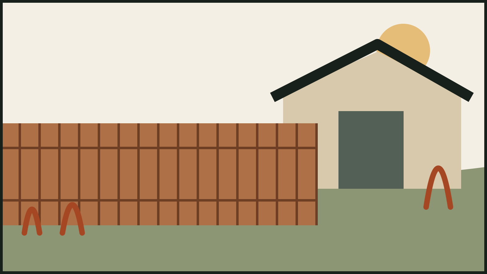
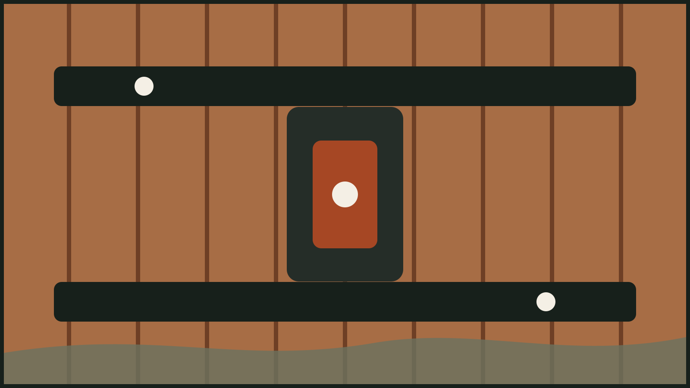
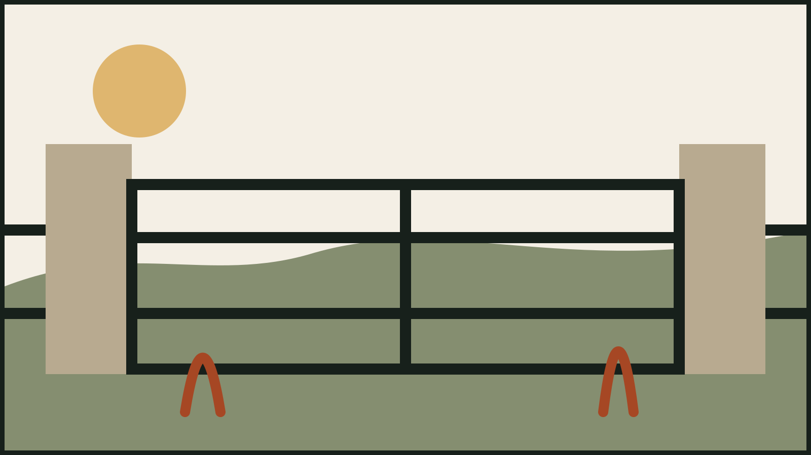

01
Cedar privacy fences
Warm, modern screening with layout options matched to the yard.
Central Texas · fences and gates
A fictional local fence specialist focused on thoughtful layouts, durable materials, and clean installation details.

Built around the property
Privacy, sightlines, gates, grade, and material all belong in the same plan. Cedarline’s fictional demonstration shows a simple process for choosing the system before building the line.
Fence styles

01
Warm, modern screening with layout options matched to the yard.
02
Open sightlines, durable boundaries, and restrained Hill Country character.
03
Walk gates and driveway entries planned as part of the whole fence line.

Open where the view matters. Private where the life happens.
Design principle for this fictional concept
A clear build path
Discuss boundaries, privacy, access, grade, and the way the outdoor space is used.
Align material, height, layout, gates, and finish with the property and priorities.
Install to the approved plan and complete a final walkthrough.
Start with the property
This proof site keeps contact actions disabled until verified business routes are supplied.